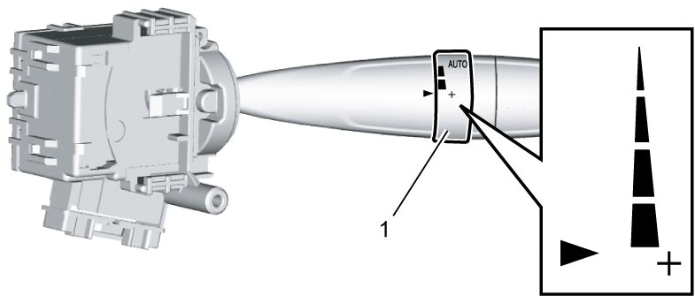
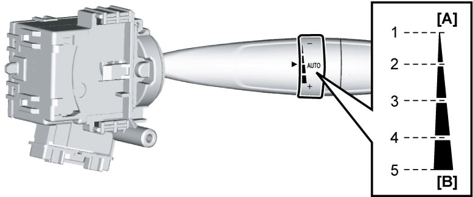
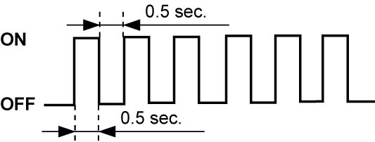
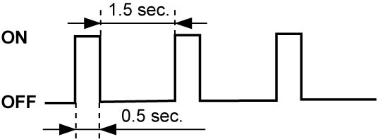
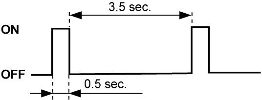

9D
| Rain / Light Sensor Setting Change Procedure (If Equipped) |
1)Check that vehicle is in the following conditions.
•Ignition mode is in “OFF”.
•Wiper and washer switch is OFF.
•Lighting switch is OFF.
•Wiper is in park positions.
•Temperature around rain / light sensor is 5 to 40 °C (41 to 120 °F).
•Vehicle is stopped.
•Adjustment knob (1) is as shown in figure.

•Wiper and washer switch is OFF.
•Lighting switch is OFF.
•Wiper is in park positions.
•Temperature around rain / light sensor is 5 to 40 °C (41 to 120 °F).
•Vehicle is stopped.
•Adjustment knob (1) is as shown in figure.

 "Expand image")
2)Set ignition “ON” and wait for 3 seconds.
3)Change position of adjustment knob in sequence of 5 → 4 → 5 → 1 → 5 → 4 → 5 within 7 seconds.

 "Expand image")
| [A]: | – | [B]: | + |
4)Check that clearance lights flash at 1-second interval.
Repeat procedure beginning with Step 1) – 3) if clearance lights do not flash.
Repeat procedure beginning with Step 1) – 3) if clearance lights do not flash.
NOTE:
If clearance lights operate repeating a 3-second on, 1-second off cycle, rain / light sensor may be abnormal. Perform diagnosis in this case.
5)Select desired setting item from the following table.
Then proceed to setting change mode for selected item according to corresponding procedure described below.
Setting change procedure for auto-on headlight system
Then proceed to setting change mode for selected item according to corresponding procedure described below.
NOTE:
On proceeding to setting change mode for selected setting item, headlights flash in pattern specific to current setting. Check current setting referring to the following table before starting setting change operation.
| Setting item | Setting mode | Headlight flashing pattern |
|---|---|---|
| Auto-on headlight system operation mode | Lights turn on at higher outside light intensity than standard |

 "Expand image") |
| Standard |

 "Expand image") |
|
| Lights turn on at lower outside light intensity than standard |

 "Expand image") |
|
| Rain-sensing wiper system operation mode | Semi-automatic operation |
|
| Full automatic operation |
|
|
| Manual intermittent operation |
|
|
| Interlocked operation of rain-sensing wiper and auto-on headlight functions | Interlocked only in heavy rain |
|
| Interlocked in any rain |
|
|
| Not interlocked |
|
|
| Re-initialization | Perform Step 4) – 5) of “Initialization” under Rain / Light Sensor Initialization (If Equipped). | |
a)Change lighting and turn signal switch position in the following sequence within 1 second: AUTO → OFF → AUTO.
b)Check that headlights flash in pattern of current setting.
c)Select desired setting mode referring to the following table.
d)Check that headlights flash in pattern of new setting.
Setting change procedure for rain-sensing wiper system| AUTO knob position | Setting mode |
|---|---|
| 5 | Turns on at higher outside light intensity than standard |
| 4 or 3 | Standard |
| 2 or 1 | Turns on at lower outside light intensity than standard |
a)Set AUTO knob to position “4”, and then change wiper and washer switch position from OFF to AUTO.
b)Check that headlights flash in pattern of current setting.
c)Select desired setting mode referring to the following table.
d)Check that headlights flash in pattern of new setting.
Setting change procedure for interlocked operation of rain-sensing wiper and auto-on headlight functions
| AUTO knob position | Setting mode |
|---|---|
| 5 | Semi-automatic operation: Automatic control mode without stop control |
| 4 or 3 | Full-automatic operation: Automatic control mode including stop control |
| 2 or 1 | Manual intermittent operation: Standard intermittent wiper operation without rain-sensing wiper function |
a)Set AUTO knob to position “2”, and then change wiper and washer switch position from OFF to AUTO.
b)Check that headlights flash in pattern of current setting.
c)Select desired setting mode referring to the following table.
d)Check that headlights flash in pattern of new setting.
| AUTO knob position | Setting mode |
|---|---|
| 5 | Interlocked operation only in heavy rain: Headlights turn on automatically in conjunction with wipers when it rains heavily. |
| 4 or 3 | Interlocked operation in any rain: Headlights turn on automatically in conjunction wipers whenever it rains. |
| 2 or 1 | Non-interlocked operation: Headlights do not turn on automatically even when wipers are automatically operated. |
6)Check new setting referring to headlight flashing patterns in table of Step 4).
NOTE:
Lighting or flashing of headlights will start about 5 seconds after setting change has been completed.
7)After completion of setting change, set ignition “OFF” or run the vehicle.